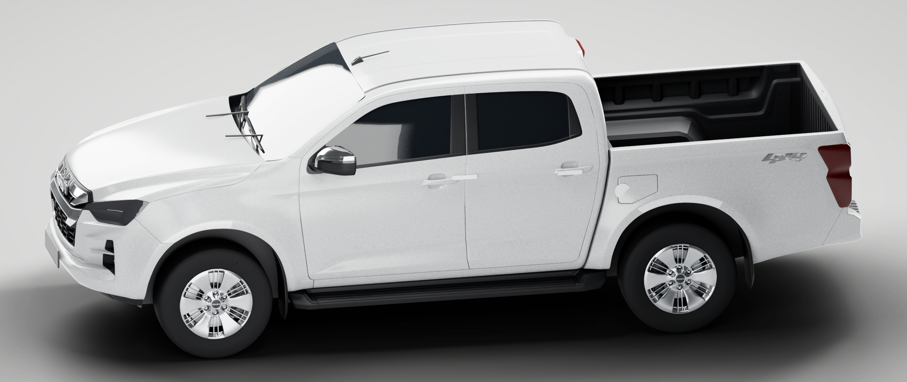
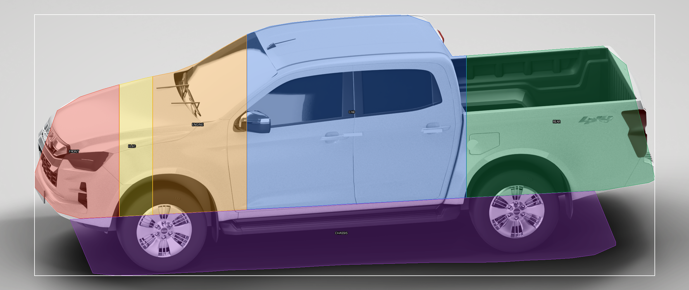
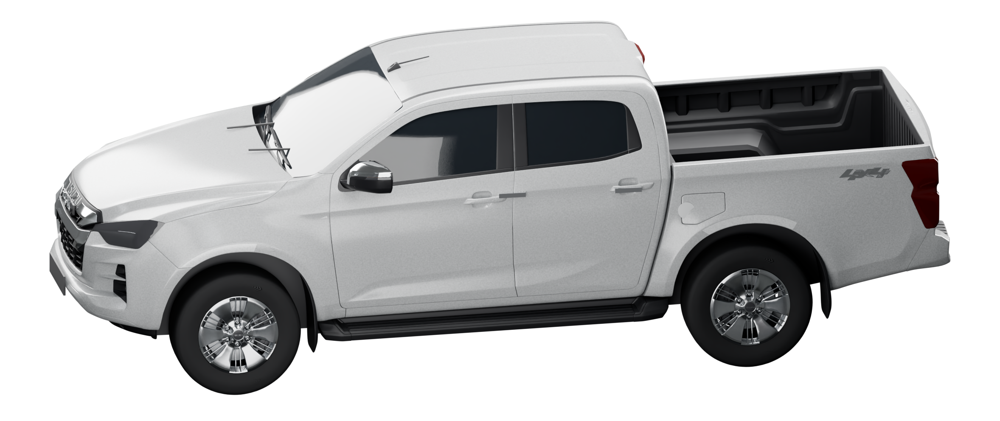
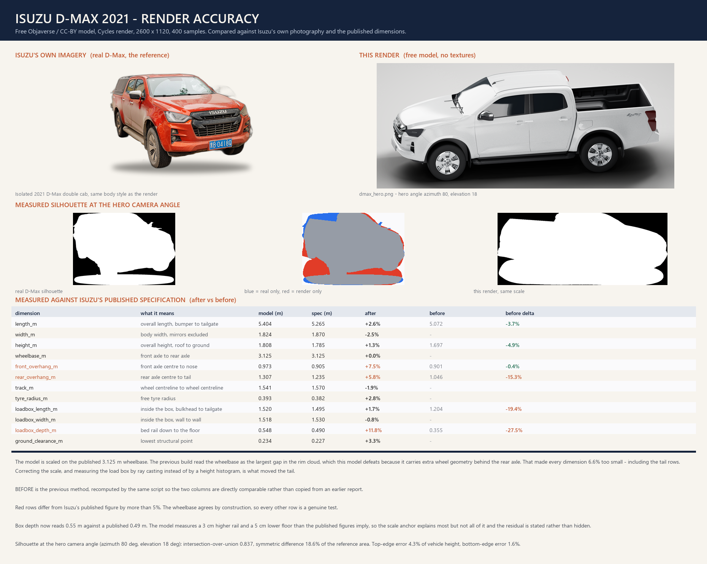

D-Max — real 3D model, rendered in Blender
The model is a genuine 2021 Isuzu D-Max built by a third-party modeller
(David_Holiday, CC-BY 4.0), obtained free and key-free from the Objaverse open
dataset — no account, no card. I loaded it into Blender, wrote the paint, glass and
chrome shaders and lit it, and rendered it. This is not my hand-drawn
geometry. Reload this page to pick up new renders.
The tail was not a model defect — it was my measuring error
The previous version reported the load box and rear overhang as 15–19% short of
Isuzu's specification, and that was wrong. It found the two axles by taking the
largest gap in the model's rim geometry and splitting there. This model also
carries extra wheel material behind the rear axle, which drags that split
rearward, so the wheelbase read as 130.1 model units instead of 122.1. Because the
wheelbase sets the scale, every dimension was then 6.6% too small — and the
tail, being farthest from the front axle, was hit hardest. Reading the axles from
the brake-rotor discs instead (which exist only on road wheels) fixes it. The tail
is now within about 2–6% of spec, and the load box is 1.520 m long against a
published 1.495 m.
How real does it actually look
Measured against a real D-Max silhouette, the outline overlaps by
IoU 0.837 — about five sixths — at the hero camera angle of azimuth 80°,
elevation 18°. The bottom edge, so the wheels, arches, sill and bumper line, agrees
to 1.6% of vehicle height, which is why it sits on the ground like a truck
instead of floating. The top edge is off by 4.3% (p95 11.7%), and that is
where the drift lives: the roofline and the cab-to-bed transition. It reads clearly
as a D-Max. What it is not is photographic, and the reason is specific —
the model file carries no textures, so the paint is a shader I wrote rather
than a photographed surface. No orange peel from a real paint map, and the badge is
extruded geometry lit by the studio rather than a decal with its own artwork. Put
crudely: a good 3D render, roughly three quarters to five sixths of the way to a
press photograph, and the missing part is surface, not shape. The one dimension
that is still genuinely off is bed depth, at 0.548 m against a published 0.490 m:
on this model the rail sits about 3 cm higher and the floor about 5 cm lower than
Isuzu's numbers imply, and I could not find a change that closed that gap without
visibly distorting the top of the load box, so it is left alone and stated here.
The render
dmax_hero.png · 2356×992 · opaque studio ground with a soft contact
shadow · 400 samples · 63 s for this pass, 34 s for the transparent one

The six clickable zones placed on it
_qa_zone_overlay.png · the zones are traced from the rendered pixels, so
they follow the body rather than being boxes. Every vehicle pixel belongs to exactly
one zone (0 pixels claimed twice), and the sliver unclaimed is the 1.33% anti-aliased
rim.

The cut-out
dmax_alpha.png · genuinely transparent, for compositing onto anything.
1,068,017 pixels at alpha 0, background median alpha 0 — checked, not assumed.

Accuracy against a real D-Max
_qa_accuracy_sheet.png · the real vehicle beside the render, the measured
silhouette difference, and the geometry table against Isuzu's own specification with
the before/after column

Geometry against Isuzu's published specification
Negative means the model is smaller than the real vehicle. "Before" is the
previous method, recomputed by the same script so the two columns are directly
comparable.
| Dimension | After | Before | Read |
|---|
| Front overhang | +7.5% | −0.4% | close, now slightly long |
| Ground clearance | +3.3% | −3.1% | close |
| Overall length | +2.6% | −3.7% | close |
| Overall height | +1.3% | −4.9% | close |
| Rear overhang | +5.8% | −15.3% | fixed |
| Load box length | +1.7% | −19.4% | fixed |
| Load box width | −0.7% | −7.0% | fixed |
| Load box depth | +11.8% | −27.5% | still off, explained above |
| Track | −1.8% | −7.9% | fixed |
| Body width | −2.5% | −8.5% | fixed |
What else changed in this pass
Beyond the scale correction.
| Item | What was done |
|---|
| Camera | Swept 28 azimuth/elevation combinations including rear three-quarter
views and elevations up to 22°, scored each against the real silhouette, then picked
80°/18° — the best-scoring angle that also keeps the nose, cab and load box legible.
0.837 vs 0.837 for the best elevation and clearly ahead of my first pick at 72°/22°. |
| Badge | The ISUZU wordmark is now real extruded letterform geometry on its own
chrome material, sitting on a dark backing plate, placed from the measured grille band.
The model's own badge is a material split on a smooth face and had no edge to catch light. |
| Number plates | A read plate surface in a recessed dark frame at both ends,
sized 470×104 mm. Deliberately blank — no registration number and no distributor
branding is invented. |
| Small detail added | Four door handles on the beltline, two windscreen wipers
on the cowl, two fuel filler doors, brake discs and calipers already present in the model
and now given their own metal and rubber responses, and a darker wheel well and arch liner. |
| Paint and surface | Layered basecoat plus clearcoat with a procedural metal
flake on the coat normal and a very shallow panel wave — the two things that make paint
read as paint rather than plastic. Faint large-scale base-colour variation so panels are
not perfectly uniform. Glass got a higher IOR and a coat; the tyres a much rougher rubber
with a mould texture; the chrome a faint directional roughness so the highlight smears. |
What I could not do
I did not lengthen the load box, because it turned out not to need lengthening — the fix
was to the scale, not the geometry. I did not close the bed-depth gap, for the reason
above. I did not add grille slats: the grille already has a moulded two-bar structure and
the front-on check showed extra slats would have read as clutter rather than detail. And
there is no texture on the paint, so up close it will never pass for a photograph no matter
how many samples I give it. Everything above is a measurement off the model or off the
render, not an impression — and if you want the evidence for the scale correction, the
`probe_*.py` scripts in this folder are what found it.